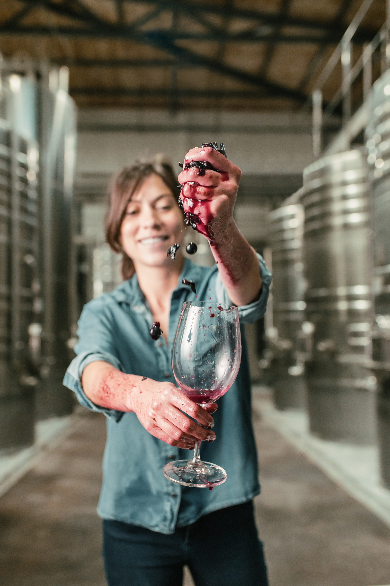

ltimas Noticias

Nueva Linea de Bodega Nieto Senetiner: Patrimonial
Nieto Senetiner presenta su nueva línea PATRIMONIAL como un homenaje a los varietales históricos que dieron origen a la vitivinicultura en Mendoza.
Leer más...
Entrevista a Juan Pablo Diaz, enólogo de Bodegas Lopez
Entrevistamos a Juan Pablo Diaz, enólogo de Bodegas López, quien nos conto un poco sobre su historia con el vino y su profesión, se las compartimos esperando la disfruten tanto como nosotros disfrutamos esta amena charla.
Leer más...

Conversamos con Agustina Hanna enologa de Ruca Malen
Agustina Hanna, nueva enóloga de Ruca Malen, quien fue elegida en busca de aportar creatividad e innovación, a partir de toda su expertise en la elaboración de vinos de alta gama.
Leer más...